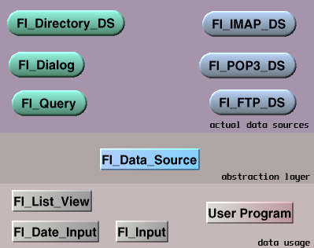

by Alexey Parshin
What is the Data Source and why do we need it?
How can a Data Source be used?
Minimal structure of a simple Data Source.
Using a Data Source in widgets.
Using Fl_Query as a Datasource.
Exceptions in Datasources.
Different sources of the information require very different ways to retrieve that information. The Datasource allows to hide the nature of information source behind the standard API, presenting information as rows (if applicable) and columns of data. It is very typical that all the rows have the same number of column types, and every column keeps it's data type from row to row. Datasource provides the abilities to open the information source and navigate through it. As soon it's opened, it has the list of the columns, or fields. Every field has the data type, width (size) and alignment, and, of course, you can read from it the actual data. As result, we have an abstraction class and can use it without knowing anything about the actual data. From the point of the particular widget, it's just a set of rows of fields. Widget opens the Datasource, reads the data, closes it. It doesn't matter if that Datasource was actually a database Query, or an FTP files directory. The widget has all the necessary information.
|
 |
There are a lot of different usages of the Datasource in widgets. Some widgets, like List View, can utilize the whole Datasource (DS) simultaneously, by reading and displaying it completely. Some widgets, like Dialog, can use just one row of the DS in a time. And, finally, a lot of widgets can use just one field of the row in DS. I'm not even going to consider a pity group of remaining widgets that can't use DS at all. In eFLTK, every widget has a field_name() method that allows to connect any widget with the field of DS. Where is the DS connection in that schema? Well, widgets are not used by themselves. Usually, widgets are placed in the group, so the group should provide the DS, if widgets inside need it. So, Fl_Group defines data_source() method to connect the group with the DS, and couple of methods to load and unload data to/from widgets. By the way, it means that we may write to some Datasources. Fl_Data_Source is the abstraction layer that hides the essentials of every possible information source from the widgets. It gives us the nice possibility to develop now the programs which will use the Datasources that doesn't exist yet. |
So, how do we read data from Datasource, and how do we write data to it? Very simple. First, we open the DS:
my_ds.open();
Datasource uses Fl_Variant to store every field. To communicate with DS we first find the field by the field name or index (in the DS row):
Fl_Data_Field& first_name_field = my_ds[“name”];
Fl_Data_Field& last_name_field = my_ds[1];
Then we can just read the value from field, or write it to the field:
Fl_String first_name = first_name_field;
Fl_String last_name = “New last name”;
last_name_field = last_name;
And , finally, we close DS:
my_ds.close();
Well, this is true for the abstract DS. The real Datasources require to define some extra parameters prior to open(), like what are we trying to open? In case of the database query it would be the text of SQL statement, for Fl_Directory_DS it would be the path to the directory, etc..
The Fl_Data_Source is an abstract class. It means you can't create an object that class - you should derive your Data Source (DS) from Fl_Data_Source. Fl_Data_Source has several groups of methods the actual DS should implement:
open() and close() methods initiate and terminate the data access session
navigation methods (first(), next(), etc.. ) allow to move between records in opened data source
field access methods allow access fields and fields' data
To say it simple, all the abstract methods in Fl_Data_Source should be implemented. The actual implementation may vary. Lets try to take Fl_Directory_DS as an example.
Open and close operations.
First, Fl_Directory_DS reads the directory contents into an array of rows of Fl_Data_Fields. Every Fl_Data_Fields object has a list of Fl_Data_Fields for file name, file size, modification date, etc.. This covers the open() method. The close() method simply releases everything allocated during open(). For the details please check the src/widgets/Fl_Directory_DS.cpp.
Navigation methods.
For Fl_Directory_DS the navigation is very simple. The class member variable m_current keeps the tracking of current data row in the opened DS. It doesn't make any sense for closed DS, of course. So, methods like first()..last() simply change the m_current row accordingly.
Field access.
Datasource should support the field information and provide field data when necessary. As soon as DS is opened, the first data row becomes available. At that moment, DS' current data row already should have the Fl_Data_Fields initialized. Using Fl_Data_Fields fields, we can always extract the number of available fields and information about data type of every field. Of course, we still have to provide all this functionality through the Datasource methods, but we already have all the necessary information.
Every real Datasource also would, probably, implement several Datasource-specific methods. The general idea is to provide all the necessary information for the correct open() of the DS. For our precious Fl_Directory_DS such methods are directory(), pattern() and several others. User should define the directory() and pattern() prior to open() so Fl_Directory_DS would know what it has to open and read.
There are several ways to use a Datasource. Widgets like Fl_ListView that represent multiple data rows may implement fill(Fl_Data_Source&) method. In the fill() method, widget usually opens the Datasource, reads the data row-by-row, and closes the Datasource. The reading is the most important part in that sequence. If all rows in the Datasource have same structure, we can determine the way how to represent the data, from the first row. For the Fl_ListView it means - read the first row, get the number of columns from the field_count() function, then iterate through the fields (columns, in other words) and get all the information we need to display each column properly. The following code shows the process:
// First, open the Datasource
if (!ds.open()) return;
// Clear the existing rows
clear();
// Get the column number
unsigned columnCount = ds.field_count();
if (!columnCount) return;
// For each column, get the data format and create the column
for (unsigned col = 0; col < columnCount; col++) {
Fl_Data_Field& df = ds.field(col);
if (!df.visible) continue;
int width = 100;
if (df.width >= 0) {
width = df.width * text_size() * 2 / 3;
}
add_column(df.name(),width);
column_flags(col,df.flags);
}
Ok, now we have columns. Lets fill them with data. After the Datasource is opened, the first row of data (if any) is already available, and we can read it. Of course, the Datasource may be empty and contain now rows. To make sure we are working with the valid row, first check the result of ds.eof() function. If it returns false, we can continue and read the data. For Fl_ListView, every item has the same number of columns (for most practical cases). For every data row, Fl_ListView reads every field and stores the information from that field in the ListView item that represents the row. After the row is read we just go to the next data row. The code below illustrates it.
// Read every row until eof()
while (!ds.eof()) {
// Create a new ListView item for a data row
Fl_ListView_ItemExt *item = new Fl_ListView_ItemExt();
item->columns(columnCount);
// Read every field of the data row and put it in the ListView
for (int col = 0; col < (int)columnCount; col++) {
Fl_Data_Field& df = ds.field(col);
if (!df.visible) continue;
item->flags(col, df.flags);
if(df.type() == VAR_IMAGEPTR) item->image(col, (Fl_Image *)df.as_image());
else item->label(col, ds.field(col).as_string());
}
// After the row is read, go to the next data row
ds.next();
}
// Close the dataset
ds.close();
That's it. After the Datasource is closed, it releases the allocated resources and may be opened again, returning us to the beginning of data.
Fl_Query is one of my favorite Datasources. It utilizes the best of the Datasource properties – the ability to adjust to different query results for different SQL statements. The Fl_Query class is derived from Fl_Datasource so it works exactly (well, almost exactly) as any other Datasource. The difference is - Fl_Query is the abstract class. It doesn't do any job by itself. Instead, we connect it to Fl_Database and let Fl_Database do everything for us, starting from actual connection to the database and to the execution of the particular query. Here is the list of parameters to define prior to open Fl_Query:
define the database connection, using database() method
define the SQL statement, using sql() method
if SQL statement contains parameters, define them using param() method
Now, after we defined query completely, we may try to open it. If everything is done correctly, the query opens and can be used pretty much as any other Datasource. The only difference in that part is that some of the database drivers allow to navigate only forward, not backward. And, of course, we should close query after using it.
Here is the example of using query:
// First, define a database connection
Fl_String connect_string "DSN=odbc_demo;UID=username;PWD=password";
Fl_ODBC_Database db (connect_string);
// Second, define query. Database and SQL are defined in the constructor
Fl_Query query(&db,”SELECT department, fname, lname FROM employees WHERE department = :dept”);
// 'dept' is the query parameter. Define the value for this parameter
query.param(“dept”) = 'Human Resources”;
// Open the Datasource
query.open();
// Read the data to the end
while (!query.eof()) {
// Print every column
printf( “%s, %s %s \n”,
query[“department”].get_string(),
query[“fname”].get_string(),
query[“lname”].get_string()
);
}
// Close the query
query.close();